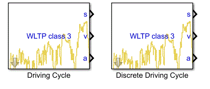
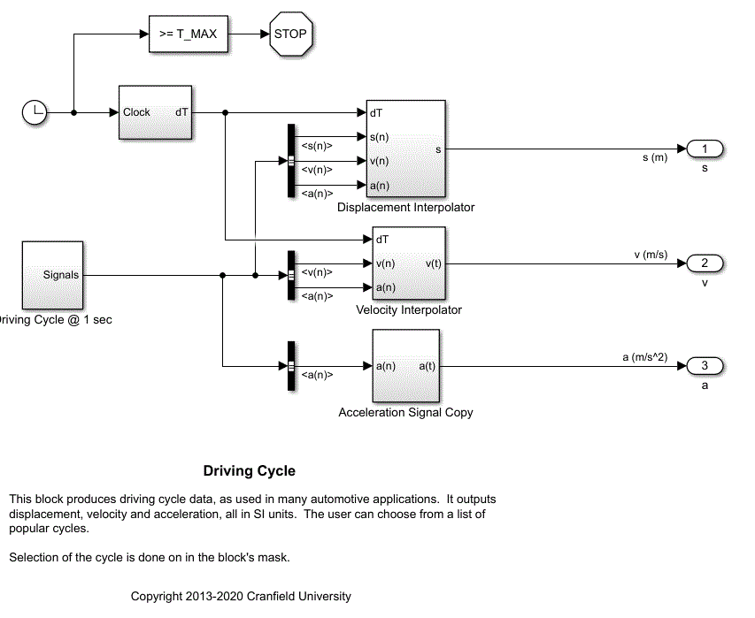
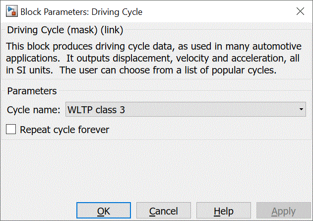
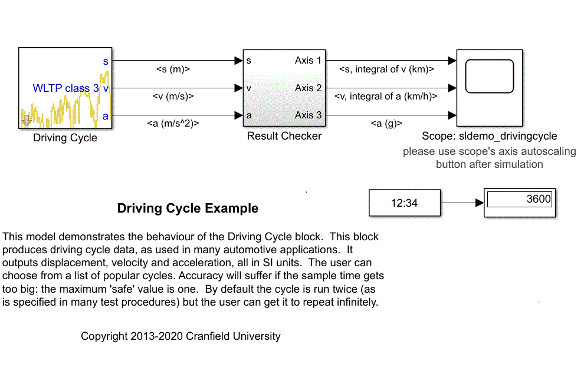
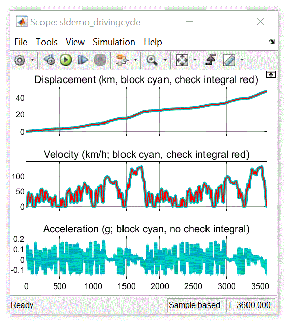

Driving Cycle & Discrete Driving Cycle
Simulink blocks representing commonly-used driving cycles.
Library

Description
These blocks produce driving cycle data, as used in many
automotive applications. They output displacement, velocity
and acceleration, all in SI units. The user can choose from a
list of popular cycles.
I created these blocks to help my students and researchers get
up and running quickly. They aren't guaranteed as fit for any
particular purpose, but I hope you find them useful.
The internal structure of the continuous time version of the
block is illustrated below. (The discrete time version is
similar.)

Parameters

-
Cycle name
-
This is a drop-down list of popular cycles such as NEDC and
WLTP class 3.
-
Repeat cycle forver
-
This is a checkbox. If ticked, the simulation will
continue until its stop time is reached; if not, it will
automatically terminate after two cycles.
-
Sample time
-
This is only available on the discrete version of the
block. It is specified in seconds and should work exactly
as expected.
Outputs
-
s (m)
-
Displacement, in SI units.
-
v (m/s)
-
Velocity, in SI units.
-
a (m/s^2)
-
Acceleration, in SI units.
Examples
-
sldemo_drivingcycle.slx
-
This model shows how to use the Driving Cycle block. It
also includes a sanity-check on the block's internal
calculations.
-
sldemo_discretedrivingcycle.slx
-
This model shows how to use the Discrete Driving Cycle
block. (It is otherwise identical to the one above.)
The continuous-time example and its output are shown below.


Daniel J. Auger